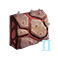
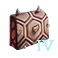
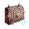
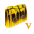
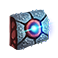

Utility components
Version
This article is for the PC version of Stellaris only.
Ships
Utility components are devices that can be installed on military ships to enhance their defensive capabilities and thus increase their survivability in combat against enemies. They are unlocked by researching or obtaining the technology with the same name. Utility components have the same costs for both mechanical and biological ships but their upkeep is changed accordingly.
Defenses
 Small,
Small,  Medium, and
Medium, and  large utility components increase the durability of a ship by providing extra hit points. These come in three forms: shields, armor, and hull.
large utility components increase the durability of a ship by providing extra hit points. These come in three forms: shields, armor, and hull.
Shields
Shields form the first layer of hit points of a ship. They are effective against energy weapons but vulnerable to kinetic weapons and penetrated by guided weapons and strike craft. Shields regenerate but also consume power.
| Component | Notes | |||||||||
|---|---|---|---|---|---|---|---|---|---|---|
| Cost | Mechanical ships | Cost | Mechanical ships | Cost | Mechanical ships | |||||
 Deflector Deflector
|
||||||||||
 Improved Deflector Improved Deflector
|
||||||||||
 Shield Shield
|
||||||||||
 Advanced Shield Advanced Shield
|
||||||||||
 Hyper Shield Hyper Shield
|
||||||||||
 Dark Matter Dark Matter
|
| |||||||||
 Psionic Barrier Psionic Barrier
|
| |||||||||
| Psionic Shield
|
| |||||||||
 Suspension Field Suspension Field
|
| |||||||||
{kind=link}
{kind=link}
{kind=link}
{kind=link}
{kind=link}
{kind=link}
{kind=link}
{kind=link}
Armor
Armor forms the second layer of hit points of a ship. They are effective against kinetic weapons but vulnerable to energy weapons. Compared to shields, armor does not regenerate but has around 33% more hit points when tiers are equal.
Empires that have a- If the ship is mechanical it regenerates 0.01% of its Hull and Armor daily during combat, and 0.05% of its Hull and Armor daily outside of combat, for each regenerative armor component.
- If the ship is biological, regenerative armor component offers 1.6x the daily armor regen compared to standard armor of the same size and tier, and its regen effect would still take place above 50% armor.
| Component | Notes | |||||||||
|---|---|---|---|---|---|---|---|---|---|---|
| Cost | Mechanical ships | Cost | Mechanical ships | Cost | Mechanical ships | |||||
   Nanocomposite Nanocomposite
|
| |||||||||
  Ceramo |
||||||||||
  Plasteel Plasteel
|
||||||||||
  Durasteel |
||||||||||
   Neutronium |
||||||||||
  Dragonscale Dragonscale
|
| |||||||||
  Pulse |
| |||||||||
{kind=link}
{kind=link}
{kind=link}
{kind=link}
{kind=link}
{kind=link}
{kind=link}
{kind=link}
{kind=link}
{kind=link}
{kind=link}
{kind=link}
{kind=link}
Plating
Plating components increase a ship's hull points. They can be acquired either by completing first contact with Crystalline Entities, by reverse-engineering destroyed Crystalline Entities, or through searching an abandoned ship left by Caravaneers.
| Component | |||||||||
|---|---|---|---|---|---|---|---|---|---|
 Crystal-Infused Plating An alloy of elements harvested from the ultra-hard Crystalline Entities lines the inner layers of this plating, improving hull integrity. |
0.25 | 50 | 1 | 0.5 | 150 | 2 | 1 | 350 | 3 |
 Crystal-Forged Plating Modifications to the process of forging the crystalline alloy further improves its durability. |
0.33 | 100 | 2 | 0.65 | 300 | 3 | 1.3 | 900 | 4 |
Auxiliary
Auxiliary components go in  Auxiliary slots and have a variety of effects. They do not increase ship upkeep except cloaking fields.
Auxiliary slots and have a variety of effects. They do not increase ship upkeep except cloaking fields.
| Component | Cost | Effects | DLC | |
|---|---|---|---|---|
 Afterburners Afterburners provide additional combat speed for the ship. |
10 | |||
 Advanced Afterburners These improved afterburners provide even more combat speed for the ship. |
20 | |||
 Reactive Armor Incorporating a crystal lattice in our ship's defenses provides some resistance to weapons that normally cut through armor. |
15 | |||
 Living Reactive Armor Threads of living metal react to incoming fire, rearranging itself to better resist penetrating weapons fire. |
25 | |||
 Shield Capacitor These capacitors store surplus energy which can quickly be transferred to reinforce a ship's shields. |
20 | |||
 Shield Hardener With these modifications, the fields generated by our shield emitters will partially deflect attacks that would otherwise bypass the shields. |
15 | |||
 Advanced Shield Hardener Zro particles raised to a high energy state add fluctuations to our shields that can deflect certain weapons that would otherwise easily penetrate the fields. |
25 | |||
 Auxiliary Fire-Control By installing an auxiliary fire-control system our ships can afford to make more advanced calculations, increasing accuracy. |
10 | |||
 Enigmatic Decoder While producing average results in standard tests, the accuracy of Enigmatic Decoder's prediction algorithms seemingly increases as the target's flight path grows more erratic. |
20 | |||
 Enigmatic Encoder The Enigmatic Encoder scrambles flight path data according to some indeterminable design before feeding it back to fleet command. |
20 | |||
 Orbital Trash Disperser This component overwhelms planetary defensive grids with trash data by spamming them with millions of minute, high-velocity projectiles. Ships equipped with this component cause more damage during orbital bombardment. |
10 | |||
Asteroidal Carapace The shell of a Cutholoid is not mineral alone, but reinforced with strong biological fibers. We can synthesize this process using advanced metallurgic techniques. |
10 |
{kind=link}
Reactor boosters
Reactor booster components improve the output of the ship's reactor. As a result the bonus they provide is larger the more advanced the ship's reactor is.
| Component | Cost | |
|---|---|---|
 Reactor Booster Additional power generation systems increase the ship's reactor output. |
+20% | |
 Improved Reactor Booster The discovery of fusion power allows for better reactor boosters to be fitted onto our ships. |
+33% | |
 Advanced Reactor Booster The discovery of antimatter power allows for highly advanced reactor boosters that can greatly enhance ship reactors. |
+50% |
Regeneration
Regeneration components allow ships to repair the  Hull and
Hull and  Armor automatically. The healing effect is increased by 5 times out of combat.
Armor automatically. The healing effect is increased by 5 times out of combat.
Due to what is likely a bug the repair effects are only 1/100 of the rate displayed in game and the following table.
| Component | Cost | DLC | |||
|---|---|---|---|---|---|
 Regenerative Hull Tissue These bacteria are imprinted with the ship's structural design and will attempt to restore hull integrity should it be compromised. |
10 | +5% | +10% | ||
 Nanite Repair System A highly effective hull auto-repair system comprised of billions of microscopic nanomachines was found among the smoking remains of the Scavenger, and has been repurposed for our uses. Whether the Scavenger pilfered this system from an ancient derelict, or was originally constructed with it remains unknown. |
15 | +15% | +20% | ||
Cetana's Nanite Repair System Cetana's advanced nanite systems will tirelessly repair and refresh our ships at a rate far beyond our current capabilities. |
20 | +25% | +20% |
{kind=link}
Marks
Marks are components unlocked by forming a Covenant with a Shroud major patron. if the  Shadows of the Shroud DLC is not installed they also need maximum Attunement with the patron. All of them cost 20
Shadows of the Shroud DLC is not installed they also need maximum Attunement with the patron. All of them cost 20  Alloys and 2
Alloys and 2  Zro and need 20
Zro and need 20  Power. They cannot be reverse-engineered from ship debris.
Power. They cannot be reverse-engineered from ship debris.
| Component | Effects |
|---|---|
 Mark of the Composer Mark of the Composer |
|
 Mark of the Eater Mark of the Eater |
|
 Mark of the Instrument Mark of the Instrument |
|
 Mark of the Whisperers Mark of the Whisperers |
|
 Mark of the Cradle Mark of the Cradle |
|
Cloaking devices
|
|
Available only with the First Contact DLC enabled. |
Cloaking devices are components that allow ships to Activate Cloaking. Each ship can only have one cloaking device.
{kind=link}
| Component | Corvette / Frigate / Mauler / Science Ship / Nanite Swarmer | Destroyer / Weaver / Riddle Escort | Cruiser / Harbinger / Nanite Interdictor | Battleship / Singer / Titan / Battlecruiser | |||||||||
|---|---|---|---|---|---|---|---|---|---|---|---|---|---|
| Cost | Cost | Cost | Cost | ||||||||||
 Basic Cloaking Field Generator A modified particle field allows our vessels to effectively 'hide' in open space. However, this comes at the cost of destabilizing other forms of energy shielding which would otherwise protect the ship. |
20 | 1 | 100% | ||||||||||
 Advanced Cloaking Field Generator Advancements in rare crystal lensing technology have greatly improved cloaking efficiency. |
|
25 | 2 |
|
25 | 1 | 100% | ||||||
 Elite Cloaking Field Generator Typical cloaking technology can play havoc with a ship's more delicate instruments. However, these elite fields render such concerns obsolete. |
|
35 | 3 |
|
35 | 2 |
|
70 | 1 | 100% | |||
 Dark Matter Cloaking Field Generator This device uses dark matter to warp space-time around the vessel, making it incredibly difficult to detect. |
|
45 | 4 |
|
45 | 3 |
|
90 | 2 |
|
180 | 1 | 50% |
 Psi-Phase Field Generator Psi-Phase Field Generators focus the psionic potential of the ship's crew to partially phase the vessel into the Shroud. This allows the ship to remain undetected by all but the best sensor arrays, though what the crew may be forced to witness is better left unsaid. |
|
45 | 5 |
|
45 | 4 |
|
90 | 3 |
|
180 | 2 | 100% except Psionic Shields/Barrier |
Boarding cables
|
|
Available only with the Grand Archive DLC enabled. |
Boarding Cables are a component only available to empires with the  Treasure Hunters origin that defeat the second Black Needle fleet. They cost 15
Treasure Hunters origin that defeat the second Black Needle fleet. They cost 15  Alloys and need 15
Alloys and need 15  Power. Each component has a 5% chance to capture an enemy ship and a 0.5% chance to capture the enemy
Power. Each component has a 5% chance to capture an enemy ship and a 0.5% chance to capture the enemy  Commander if the enemy fleet had any. If a
Commander if the enemy fleet had any. If a  Commander is captured its owner will be offered the option to pay
Commander is captured its owner will be offered the option to pay  Energy that scales with the empire's total
Energy that scales with the empire's total  Trade Value to receive them back. If the owner refuses the captor empires has the following options:
Trade Value to receive them back. If the owner refuses the captor empires has the following options:
- All empires can imprison the leader to gain 100
 Intel on its empire
Intel on its empire - Empires that are not Pacifist or Xenophile can execute the leader to gain 250-1000000
 Unity
Unity - Empires that are not Militarist or Xenophobe can keep the leader on the capital to gain 40-100
 Influence
Influence
The legendary paragon Captain Ness also applies the same effect to the entire fleet.
Titans and colossal ships cannot be captured. Nanite and offspring ships can only be captured if the empire is already capable of building them.
References
| Exploration | Exploration • FTL • Unique systems • L-Cluster • Pre-FTL species • Fallen empire • Spaceborne aliens • Enclaves • Guardians • Marauders • Caravaneers |
| Celestial bodies | Celestial body • Colonization • Planetary features • Planet modifiers |
| Discovery | Discovery • Anomaly • Archaeological site • Astral rift • Relics • Collection |
| Species | Species • Pop modification • Biological traits • Machine traits • Population • Species rights • Ethics |
| Leaders | Leader • Common leader traits • Commander traits • Official traits • Scientist traits • Paragons |
| Governance | Empire • Origin • Government • Civics • Council • Policies • Edicts • Factions • Traditions • Ascension perks • Ambition • Situations |
| Economy | Resources • Planetary management • Districts • Jobs • Designation • Trade • Megastructures • Waystation |
| Buildings | Planet capital • Common buildings • Planet unique • Empire unique • Holdings |
| Ships | Ship • Arkship • Ship designer • Core components • Weapon components • Utility components • Mutations • Offensive mutations |
| Technology | Technology • Physics research • Society research • Engineering research |
| Diplomacy | Diplomacy • Relations • Galactic community • Federations • Subject empires • Intelligence • Contracts • AI personalities |
| Warfare | Warfare • Space warfare • Land warfare • Starbase • Crisis |
| Others | Events • The Shroud • Preset empires • AI players • Stat modifiers • Console commands • Easter eggs |